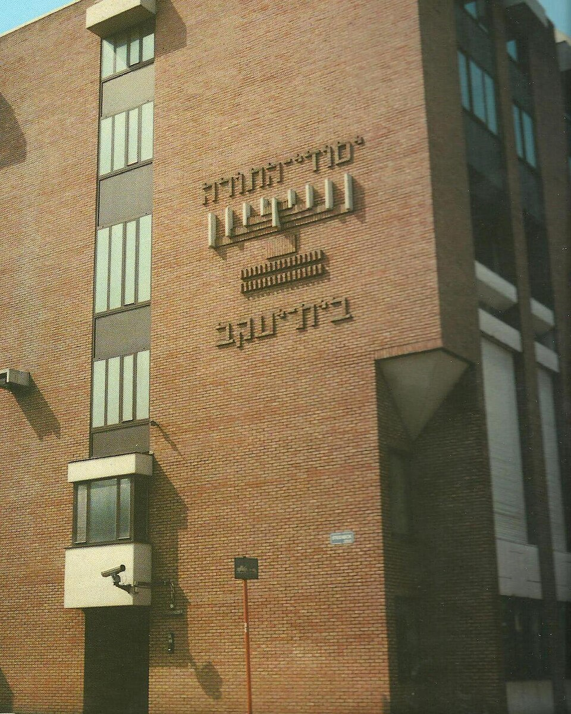

Histoire
Fondée en 1895, Jesode Hatorah est la plus ancienne école de jour juive d'Anvers. Elle a été créée pour offrir une éducation traditionnelle basée sur la Torah ainsi que des études générales à la communauté orthodoxe croissante de la ville. Au fil des décennies, elle a développé ses installations pour accueillir des sections pour garçons et pour filles (cette dernière étant connue sous le nom de Beth Jacob), devenant ainsi une pierre angulaire de la vie juive traditionnelle à Anvers.
Seconde Guerre mondiale et reconstruction
Pendant l'occupation allemande de la Belgique lors de la Seconde Guerre mondiale, l'école a été contrainte de fermer et nombre de ses enseignants et élèves ont été déportés. Après la libération d'Anvers en septembre 1944, les survivants se sont immédiatement attelés à la reconstruction de la communauté. Jesode Hatorah-Beth Jacob a officiellement rouvert ses portes en mai 1945, jouant un rôle crucial dans le retour à la normale et la continuité éducative pour les familles de retour.
Aujourd'hui
Aujourd'hui, Jesode Hatorah-Beth Jacob est un établissement d'enseignement vaste et prospère au service de la communauté Haredi (ultra-orthodoxe) d'Anvers. Reconnu et subventionné par le gouvernement belge, il offre un enseignement profane de haut niveau parallèlement à des études juives et de la Torah intensives. Il reste un pilier essentiel du taux exceptionnellement élevé de scolarisation dans les écoles confessionnelles juives d'Anvers.
Archives communautaires
